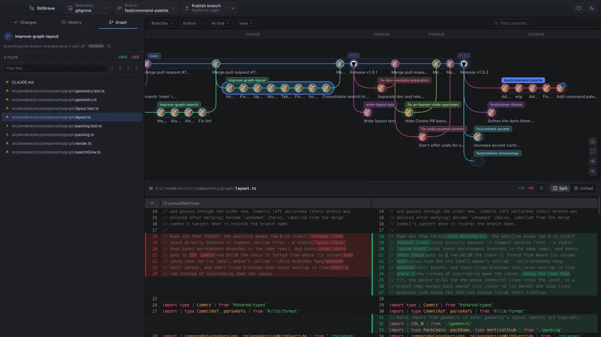

New · The Graph
Your whole repo. One living map.
A pannable, zoomable branch explorer: the mainline on top, release lines pinned beneath it, every branch hanging off its parent. Click a commit for its changes, click a branch for everything it did since it forked — double-click to check it out. Focus a branch and its relatives, spot cherry-picked twins across release lines, and find any commit, branch or tag as you type.
focus lensrelease linesbackport twinsfind commits
